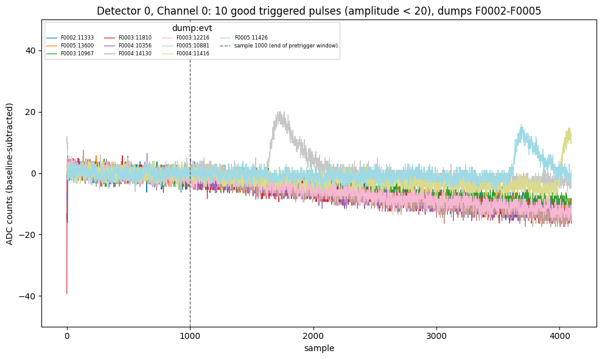

07221203_2025_dump2_pulse.ipynb — the notebook behind this note. Pinned to c3d6754.python/ — the library it uses (Note 4). Pinned to c3d6754.Find several clean, clearly triggered, comparably sized pulses in series 07221203_2025 and overlay them to see where the pulse onset falls inside the 4096-sample window. Dumps F0002–F0005 (8961, 8580, 8724 and 8661 channel groups) are pooled; restricted to Detector 0, Channel 0 this gives 11,642 traces.
Tightened relative to the single-dump version on every axis:
bstd below its own 10th percentile, pooled across the four dumps (bstd < 1.70): a much quieter pretrigger baseline, to keep out the contamination described in Note 2;dev (maximum excursion) below 20 ADC counts, down from 100, to get small, comparably sized pulses;ratio > 9, raised from 8 after looking at the plot: at 8 most examples showed no visible pulse, because some quiet traces cross a loose ratio threshold by extreme-value chance alone. Going to 9 cut the candidates from 29 to 10.Result: 10 of 11,642 traces.

dev (14–17.4) is essentially the drift, and after removing a linear trend nothing larger than ~2.5 counts remains (noise level ~0.25 counts in a 40-sample average).
| Trace | dev | ratio | Visible pulse? | Approximate onset |
|---|---|---|---|---|
| F0005:10881 | 20.0 | 12.1 | yes | sample ~1650 |
| F0005:11426 | 16.0 | 10.7 | yes | sample ~3600 |
| F0004:11416 | 14.7 | 10.2 | yes | sample ~3900 (still rising at the end of the trace) |
| the other 7 | 14.4–17.4 | 9.1–10.7 | no (drift) | — |
Among the three real pulses the onset is different every time, all well past the nominal pretrigger/post-trigger boundary at sample 1000. That is consistent with there being no fixed “trigger sample” for this trigger configuration, which would matter for optimal filtering: Golwala’s thesis (Appendix B, section B.4) assumes a known template start time, so a time-offset search rather than a fixed-position fit would be needed. Three pulses is thin evidence for that, though.
dev and ratio alone cannot tell a drifting baseline from a pulse. A drift or slope quantity, or requiring a localized excursion, would be candidates.ratio > 9 threshold was chosen by eye.ratio_band (renamed from excursion_band on 2026-09-23; see Note 4) and still selects the same 10 traces.